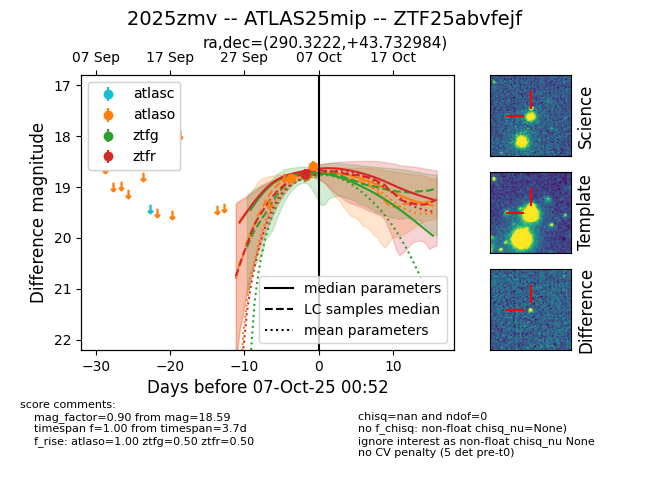
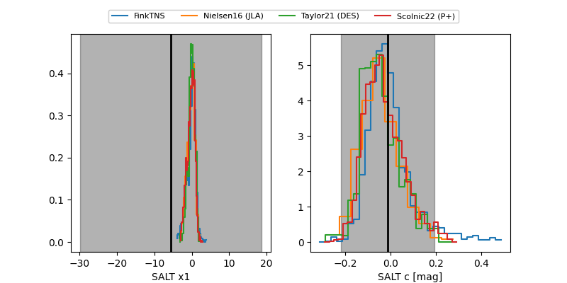

FINK: ZTF25abvfejf
Lasair: ZTF25abvfejf
ALeRCE: ZTF25abvfejf
TNS: 2025zmv
YSE: 2025zmv
ZTF25abvfejf (ztf,fink)
2025zmv (tns,yse)
ATLAS25mip (atlas)
equatorial (ra, dec) = (290.3222,+43.73298)
galactic (l, b) = (75.4986,+13.39702)


last atlaso=18.59, ztfg=18.77, ztfr=18.73
3 atlaso, 1 ztfg, 1 ztfr detections